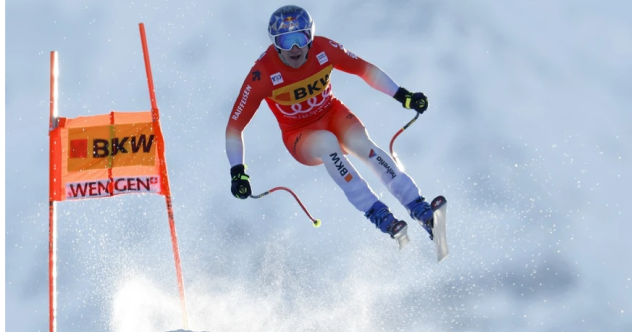

sport
Pourquoi tant de cyclistes vivent-ils un drame après leur carrière?
08.01.2024, 8:30

sport
Genève n'a aucune chance d'organiser la finale de la Champions League
08.01.2024, 9:12

sport
Enorme coup dur pour Rafael Nadal
sport
Iga Swiatek est devenue meilleure grâce... aux Lego

sport
Marco Odermatt s'impose dans la discipline qui lui résistait encore